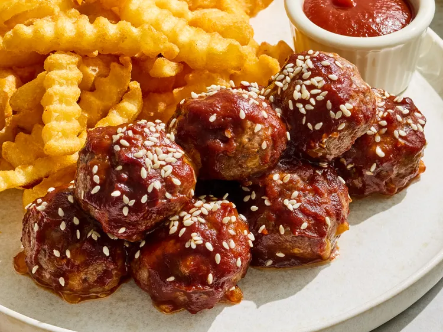

Cheeseburger Meatballs

These cheeseburger meatballs pack all the classic flavors of a cheeseburger into
tender, oven-baked meatballs. Easy to make and perfect for dipping in your choice
of sauce, they're a fun twist on a comfort food favorite.
Ingredients
- 1 pound ground beef
- 1/2 teaspoon kosher salt
- 1/2 teaspoon ground black pepper
- 1/8 teaspoon cayenne pepper
- 1/2 cup shredded sharp Cheddar cheese
- 2 tablespoons salted butter
- 1 cup BBQ sauce, warmed
- 2 teaspoons sesame seeds
Steps
- Preheat the oven to 425 degrees F (220 degrees C). Line a baking sheet with aluminum foil.
- Place ground beef, salt, pepper, cayenne, and shredded Cheddar cheese in a bowl. Mix well until evenly combined. With damp hands, form into 1-inch balls and place on the prepared sheet. Brush meatballs all over with melted butter, then brush with BBQ sauce.
- Bake in the preheated oven until meatballs are no longer pink at the center, 7 to 10 minutes. Brush with BBQ sauce halfway through cooking time, or more often if meatballs seem dry.
- Sprinkle with sesame seeds before serving.